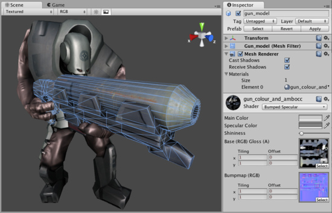

Mesh Renderer
The Mesh Renderer takes the geometry from the Mesh Filter and renders it at the position defined by the object's Transform component.

A Mesh Renderer together with Mesh Filter makes the model appear on screen.
A Mesh Renderer together with Mesh Filter makes the model appear on screen.
Properties
| Cast Shadows (Pro only) | If enabled, this Mesh will create shadows when a shadow-creating Light shines on it |
| Receive Shadows (Pro only) | If enabled, this Mesh will display any shadows being cast upon it |
| Materials | A list of Materials to render model with. |
Details
Meshes imported from 3D packages can use multiple Materials. For each Material there is an entry in Mesh Renderer's Materials list.